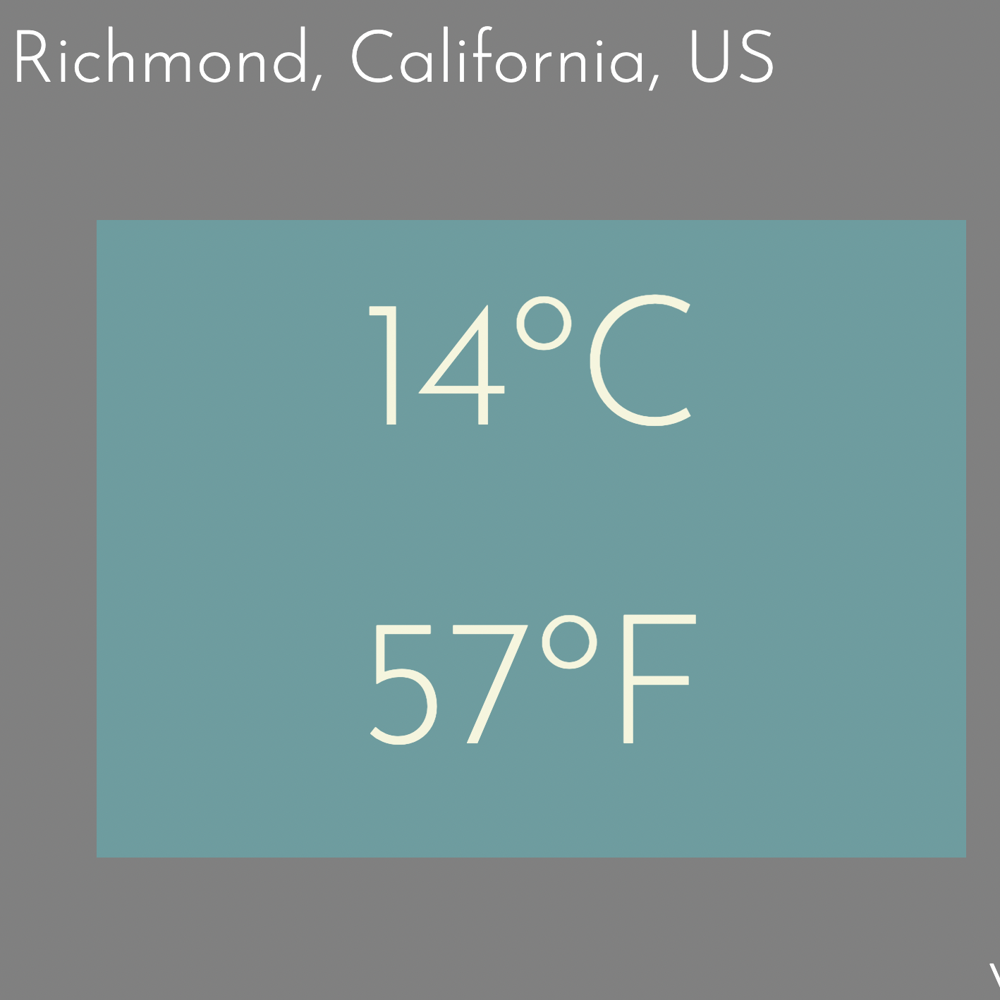

Personal Project - What The Farenheit
|  |
As a Canadian living in non-metric land, aka California, I needed a way to easily look up what the temperature in Celsius was in Farenheit, since none of my friends here knew what I was talking about when I said things like "omg, it's 18 outside today!". Figured seeing both of them at the same time would be an easier way for me to learn F as well. So Farenheit.wtf was born, and my friend Schuyler helped me bring to life, and gifted me the domain. Built using: JavaScript/css Check it out --Web App GitHub Repo |